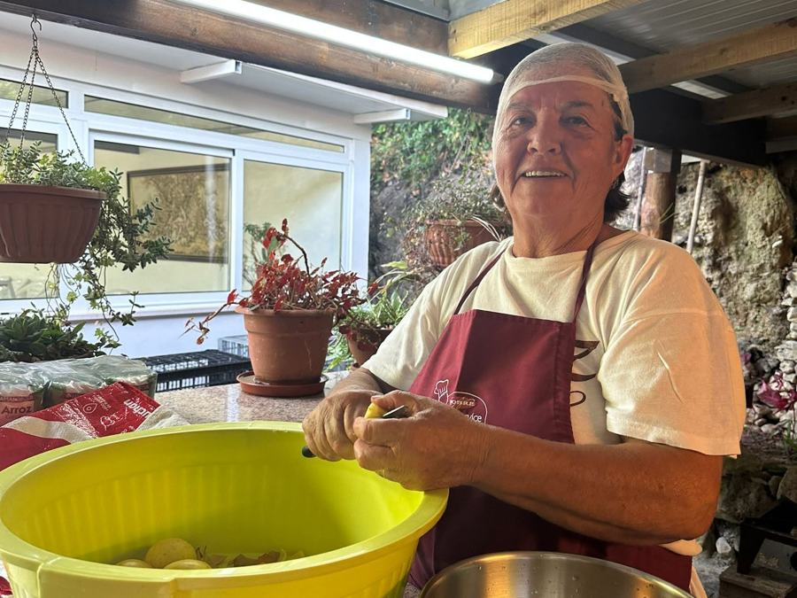

IPSS · Coimbra, desde 1999
Cada família que ajudamos começou por um gesto simples.
Somos uma instituição de solidariedade social sem fins lucrativos, sem apoio estatal, sustentada por voluntários, doações e parcerias locais. Apoiamos famílias, idosos e pessoas em situação de sem-abrigo em Coimbra e na região de Ovar.

